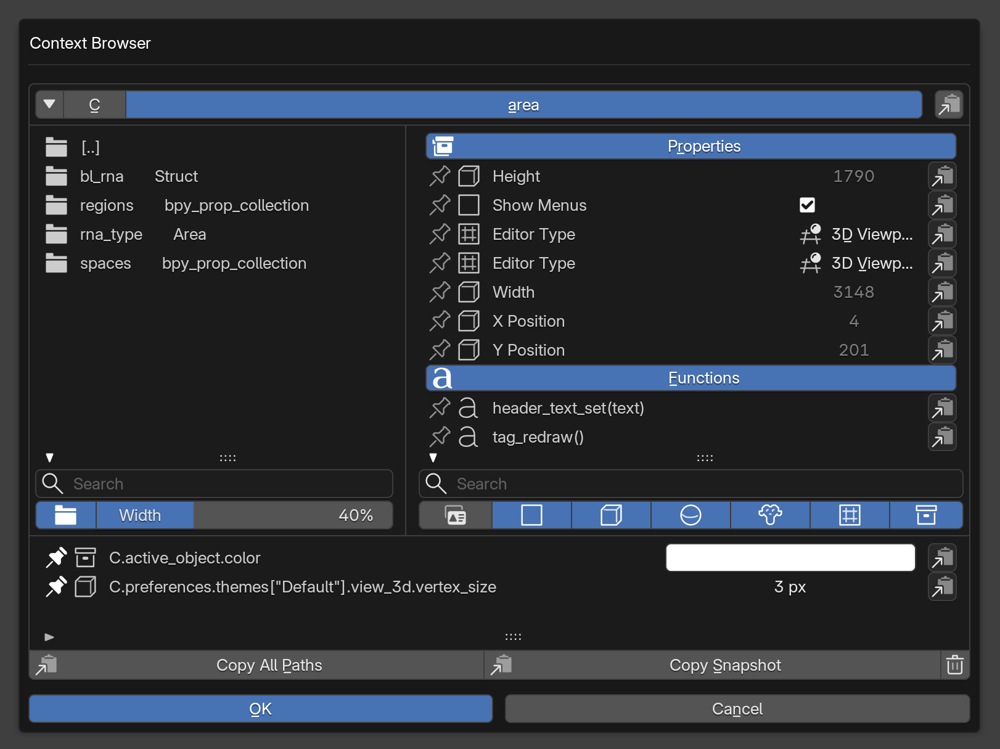

Context Browser¶
使いたいプロパティや、条件に使う現在の状態が、Blenderの画面上で見つからないことがあります。Context Browser（CB） は、contextやデータをたどり、プロパティの値・Pythonのパス・メソッドを確認するためのアドオンです。
見つけたプロパティをその場で編集し、パスや値をコピーできます。PMEと組み合わせると、プロパティをキャプチャメニューへ渡して、自分のメニューに追加できます。CBは単体でも利用できます。
PME-Fを購入済みの方は、PME Repositoryの設定後、BlenderのPreferences → Get Extensionsで Context Browser を検索し、インストールして有効にしてください。
画面の構成¶

1パスとブックマーク調べている場所を確認し、階層を移動します。 2オブジェクトとコレクションメンバーをたどって次の階層を開きます。 3プロパティとメソッド値を確認・編集し、対象の操作を選びます。 4検索と表示フィルター名前や型で一覧を絞り込みます。 5Pins保持した対象を参照・編集・コピーします。開く¶
各エリアのヘッダーにあるCBボタンから、そのエリアのcontextを開きます。F3 → Context Browser、または画面左上のBlenderメニュー → Context Browser… からは、Pickerで調べたいエリア・リージョンを選びます。ハイライトを確認してクリックするとCBが開き、Escまたは右クリックで選択を中止します。
たとえば3D Viewportを選ぶと、その場所のアクティブオブジェクトや表示設定をたどれます。Outlinerなど別のエリアでは、参照できるcontextの内容が変わります。
アドオンのPreferencesから呼び出し用ショートカットも設定できます。
オブジェクトとコレクション¶
左の一覧から、現在の対象が持つオブジェクトやコレクションをたどります。[..] は一つ上の階層へ戻ります。
画像では C.area の regions や spaces が並んでいます。regions を開くと、そのエリアを構成するリージョンを調べられます。左下の Width で、左右の一覧の幅の比率を調整します。
プロパティとメソッド¶
右の Properties には値が並びます。変更可能なプロパティは、チェックボックスや入力欄などから編集できます。配列などは Edit… から開きます。画像のHeightやWidthのような読み取り専用の値は確認のみです。
Functions にはメソッド名と引数が並びます。引数なしと分かるものは tag_redraw() のように表示されます。引数情報を取得できない場合は (...) になります。一覧を表示するだけでは、メソッドは実行されません。
各行の左端はPin、隣は型のアイコン、右端は Target Actions です。
Target Actions¶
各行の右端から、対象のパスや値を使う操作を選びます。表示される項目は、対象の種類やPMEの利用可否によって変わります。
- Copy Path
プロパティのPythonパスをコピーします。例:
C.object.display_type。- Copy Value
操作した時点の値をPythonの値としてコピーします。enumでは画面上のラベルではなく、
'WIRE'などのidentifierをコピーします。- Copy Enum Identifiers
enumに宣言されているidentifierの一覧をコピーします。現在選択中の値だけを得る場合は Copy Value を使います。
- Copy Method Path
メソッドまでのパスをコピーします。例:
C.area.tag_redraw。- Copy Call Template
引数を含む呼び出しのひな形をコピーします。例:
C.area.tag_redraw()。メソッドを実行する操作ではありません。引数がある場合は、実行前に内容を調整してください。- Open API Reference
Blender公式APIドキュメントを開きます。掲載先を特定できない対象では、公式ドキュメントの検索へ進みます。
- Capture in PME…
プロパティをPMEのキャプチャメニューへ渡します。続けて追加先を選び、メニュー項目を作成します。対応するPMEが有効な場合に利用できます。
コピーやキャプチャの前に対象が失われたり、別の対象に変わった場合は、エラーを確認してCBを開き直してください。
検索と表示フィルター¶
左右の検索欄は、それぞれの一覧を絞り込みます。プロパティは表示名とidentifierのどちらからも検索できます。
右下の Show Property Identifiers で、プロパティ名をUIラベルとPythonのidentifierの間で切り替えます。画像の Height は height、Show Menus は show_menus に対応します。
その隣の型フィルターで、Boolean、整数、数値、文字列、enum、配列の表示を切り替えます。項目が見当たらない場合は、検索文字列と型フィルターを確認してください。
Pins¶
行の左端のPinを押すと、対象を下部の一覧に追加します。もう一度押すと解除します。Pinがないときは、この一覧は表示されません。
プロパティは通常の一覧と同じように値を確認・編集でき、メソッドは名前と引数を参照できます。各行のTarget Actionsも使えます。
Pinはパスを保持します。たとえば C.active_object.color は、そのときのアクティブオブジェクトを参照します。Pinした時点のオブジェクトを固定するものではありません。アクティブオブジェクトがないなど、参照できない場合は行に問題が表示されます。
Copy All Paths はピンしたパスをまとめてコピーします。Copy Snapshot はパスと取得時点の値などをまとめてコピーし、調査メモやAIへの相談に使えます。右端のごみ箱はすべてのPinを削除します。
アドオンのPreferencesにも Pinned Paths があります。ここではパスの一覧を確認し、一括コピーや削除を行えます。
ConsoleのArea Picker¶
Python Consoleのヘッダーにあるスポイト付きの Area Picker は、現在入力しているコードを、選んだエディターで実行するための文で包みます。
Consoleにコードを入力します。まだ実行しません。
Area Picker を押して、対象のエリアをクリックします。
with C.temp_override(...):が付いた入力を確認して実行します。
たとえば、選択対象へ3D Viewを寄せるコードを入力します。
bpy.ops.view3d.view_selected()
3D Viewを選ぶと、選んだエリアとそのWINDOWリージョンを指定した with C.temp_override(...): bpy.ops.view3d.view_selected() の形になります。Pickerはコードを挿入するだけで、自動実行しません。
隣のコピーアイコンは、選んだエリアのパスをクリップボードへコピーします。エリアのインデックスは画面の分割・結合で変わるため、レイアウトを変えた後は選び直してください。
実行場所の指定は、モードや選択状態を変更しません。たとえばメッシュのEdit Modeで選択を広げる操作は bpy.ops.mesh.select_more()、Object Modeで親子関係の選択を広げる操作は bpy.ops.object.select_more() です。必要な状態が合わない場合は、場所を指定していても実行できません。
PMEのコード欄で同じことをするには、override_context() を使います。
表示設定¶
CB左上の▼メニュー末尾の Settings…、またはアドオンのPreferencesから変更します。
- Show Header Button
各エリアのヘッダーにCBの呼び出しボタンを表示します。
- Show Console Area Picker
Python ConsoleのヘッダーにArea Pickerとパスコピーのボタンを表示します。
- Width
CBポップアップの幅を指定します。次にCBを開いたときに反映されます。
- Number of Rows
オブジェクト・プロパティ一覧に表示する行数を指定します。
関連ページ¶
関連ページ
キャプチャーメニュー — PMEのキャプチャメニュー
Property Stack Editor — プロパティへの操作を組み立てる
Context Router Editor — 現在の状況から呼び出す対象を選ぶ
コードの入力と実行 — コマンドを編集する